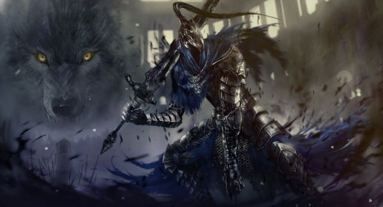

A série Souls refere-se a um conjunto de videojogos do género role-playing game de acção, criados e produzidos pela companhia japonesa FromSoftware. O primeiro jogo da série, Demon's Souls, foi lançado em 2009 em exclusivo para a PlayStation 3.
O Cavaleiro Artorias, também conhecido como Artorias the Abysswalker, é um chefe em Dark Souls. Ele é exclusivo das Artorias of the Abyss DLC.
